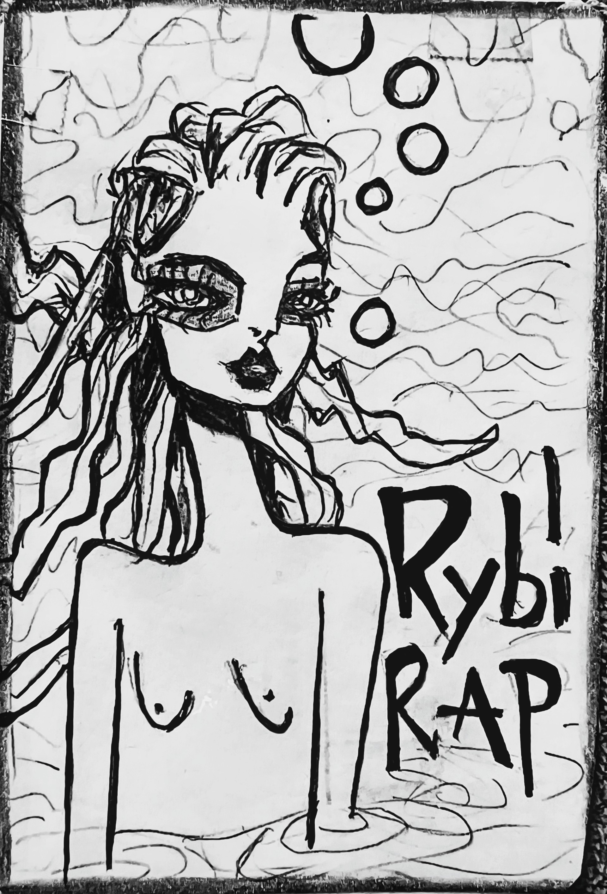

Jednotlivé části karty
Pracovní sada dvanácti perspektiv. Názvy a texty slouží jako výchozí materiál, nikoli jako dogma. Číselné pozice jsou pracovní souřadnice pro experiment a lze je později změnit.
Otevřené perspektivy
Sem lze přidat perspektivy navržené modelem nebo člověkem, které se nevejdou do pracovní sady nebo ji rozlišují jinak. Nemají přidělený úhel, dokud pro něj nebude důvod.
Návrh perspektivy není automaticky potvrzená kategorie. Uchováváme, kdo nebo co ji navrhlo a z jakého pozorování vznikla.
Vložení skutečných reprezentací
Vygeneruj embeddingy multimodálním modelem, který umí sdílený prostor pro text a obraz, a nahraj JSON. Každá položka musí mít stejnou délku vektoru a stejný model musí být použit pro všechny položky.
Očekávaný formát
Doporučené položky: story, illustration, angle_0, angle_30 … angle_330. Můžeš přidat další varianty a výstupy kombinací. Zachovej pole model, dimension a source u každé položky.
Mapa reprezentací
Po načtení vektorů se vypočítá kosinová podobnost, matice vztahů a dvourozměrná PCA projekce. Projekce je orientační zobrazení, nikoli doslovná geometrie latentního prostoru.
Kruhové uspořádání podle úhloměru
Projekce PCA · 2D
Nejbližší sousedé
Matice kosinové podobnosti
Kosinová podobnost měří úhlovou blízkost vektorů. PCA zachovává co nejvíce celkové variance v lineární projekci, ale může zkreslit lokální sousedství. Pro UMAP, TDA a persistent homology je vhodné navázat až na větší soubor karet a ověřené vektory.
Forma, obsah a průnik médií
Pozorování odděluje doložitelné vlastnosti zdroje od interpretačních hypotéz. Nic z hypotéz se nepovažuje za automaticky prokázané.
1 · Co dělá text svou formou
„Flow je king a king je ryba.“ / „Riff kape, flow teče.“
Anglicismy, rytmická slovní hra, aliterace a krátké úderné věty. Forma podporuje téma rapu.
„Dávaj rytmus vodě. Dávaj smysl tichu. Dávají beaty proudům.“
Opakovaná syntaktická konstrukce vytváří rytmický vzorec.
„Možná je čas, / aby se / přestalo poslouchat a začalo se vnímat.“
Závěr rozděluje větu do několika kroků. Čtení musí projít pauzami, než se výpověď dokončí.
„Řev. Ryk. Krákot. Jekot.“ / „Píp rýmuje s píp jinak bez ideje.“
Řetězení zvukově příbuzných slov a komentář o zvuku přímo v textu.
2 · Co ukazuje ilustrace
Pozorovatelné: černobílá ruční kresba ženské tváře/postavy, výrazné rty, vlnité linie kolem hlavy a těla, kruhové tvary připomínající bubliny a ručně psaný nápis „RYBÍ RAP“.
Interpretace k ověření: postava může fungovat jako obraz řeči/hlasového projevu; vlny a kruhy mohou vizuálně převádět rytmus, vibrace nebo šíření zvuku. Samotný obrázek ale neukazuje doslovnou rybu.
3 · Vztahy mezi médii
Text pojmenovává rybí rap. Obraz spojuje lidskou mluvící postavu, nápis a vlnění/kruhy. Možná se zde hlas a rybí jev rozdělují mezi dvě média.
Text rytmizuje, opakuje a pracuje se zvukem právě ve chvíli, kdy mluví o hudbě, rapu a vibracích. Jde o kandidáta na „forma provádí obsah“.
Obě média odkazují k rapu, ale jinými prostředky: text zvukem a syntaxí, obraz kresbou, nápisem, liniemi a kruhy.
4 · Výzkumný záznam
Tento záznam lze exportovat a použít jako anotaci při tvorbě embeddingů nebo při zadání modelu. Pozorování a hypotézy zůstávají oddělené.
5 · Co budeme měřit embeddingy
- Textový embedding celé pohádky: významová blízkost.
- Textový embedding vybraných úryvků: lokální význam a motivy.
- Samostatná reprezentace formy textu: rytmus, opakování, fragmentace a zvukové vzorce. Tu je vhodné získat zvlášť, nikoli předstírat, že běžný sémantický embedding měří rytmus přesně.
- Obrazový embedding ilustrace: vizuální obsah a kompozice.
- Multimodální porovnání: pouze modelem, který skutečně podporuje společný textově-obrazový prostor.
Samotná podobnost vektorů nedokazuje, že model pochopil vztah formy a obsahu. To ověříme také kontrolovanými textovými popisy a úlohami, kde se význam a forma záměrně oddělí.